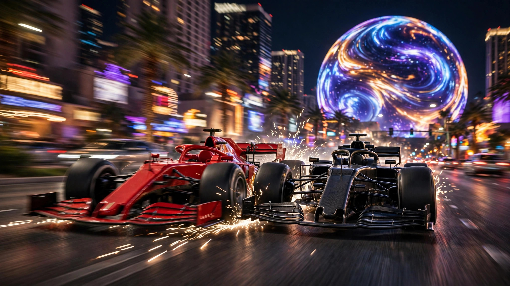

Las Vegas GP: Ferrari Teammates Crash, Verstappen Mocks Russell — What Happened

Max Verstappen won the Las Vegas Grand Prix on Saturday night, beating Lando Norris by just 0.639 seconds. It was his 75th Formula 1 win and his third on the Strip. But nobody is talking about the win. They are talking about what happened behind him: Charles Leclerc crashed into his own Ferrari teammate Lewis Hamilton, George Russell crashed into the barriers — and Verstappen laughed about it in the press conference.
The 50-lap race produced 34 changes of the lead and well over 300 overtakes, as the slipstream on the long straights of the Las Vegas Strip Circuit made it impossible for anyone to pull clear. Five different drivers led at some point. The final result: Verstappen first, Norris second, Oscar Piastri third for a McLaren double podium, and newly crowned world champion Kimi Antonelli fourth.
The Ferrari Crash: Leclerc Hits Hamilton on Lap 38
With 12 laps remaining, the two Ferraris were battling for sixth. Ferrari had ordered Leclerc not to attack Hamilton — but Leclerc made the move anyway, diving down the inside of Turn 7. The cars touched, Hamilton spun, and both drivers' races were ruined.
The stewards investigated and ruled that Leclerc was wholly responsible: he had approached from too far behind to have earned the right to the corner. He was given a 10-second penalty. He crossed the finish line sixth, but the penalty dropped him to 10th — worth just one championship point.
Leclerc did not argue. He accepted blame after the race, saying he felt embarrassed for Ferrari and accepting the stewards' decision. Team principal Frédéric Vasseur was less forgiving, describing Leclerc's mistake as unacceptable. Hamilton, who had already served his own separate 10-second penalty earlier in the race for leaving the track and gaining an advantage against Norris, recovered to finish seventh — three places ahead of his teammate.
Russell Hits the Wall — and Verstappen's Reaction
George Russell had challenged Verstappen for the lead all night. But with three laps remaining, trying to pass his own Mercedes teammate Antonelli for second, Russell locked up, ran into a barrier, and dropped to ninth.
The crash was the end of a weekend-long feud. In final practice, Russell and Verstappen had made contact, landing Verstappen with a stewards' warning — and Russell had accused the Dutchman of trying to "screw me over". So when Verstappen saw Russell's crash in his mirrors, he did not hide his delight.
"He speaks a lot next to the track," Verstappen told the post-race press conference. "It doesn't really bother me because he's so far below my level that it doesn't really make any sense for me to try and challenge that. And today karma is a bitch. It was honestly fantastic when I looked in my mirror and I saw what was happening. So I was like 'fantastic. My day's only getting better'."
Russell said he had no regrets: "I felt like I had to go for it if I wanted to win the race. In a race like this it was sort of high risk, high reward."
The Rest of the Chaos
The Ferrari crash and Russell's wall were not the only incidents in a race that barely stopped delivering:
- Safety car, laps 19–25: Sergio Pérez collided with Rafael Câmara at Turn 14. Pérez was later found wholly to blame and given a 10-second penalty, converted to a five-place grid drop at his next race because he retired. The incident also coincided with Arvid Lindblad's retirement.
- Hadjar's penalty: Isack Hadjar was given a 10-second penalty for driving unnecessarily slowly under the safety car — at one point running about 100 km/h slower — to open a gap for Verstappen. He dropped from 14th to 15th.
- Antonelli's final-lap error: the new world champion made an error with his energy deployment at the start of the final lap, which let Norris and Piastri snatch the McLaren double podium from him. He finished fourth.
- The non-starters: Alex Albon did not start with overheating brakes, and Liam Lawson started late after a fuel leak.
What Happens Next
Two rounds remain: Qatar and Abu Dhabi. Verstappen is 37 points clear of Hamilton in the fight for second in the drivers' standings, and McLaren are nine points behind Red Bull for third in the constructors'. Ferrari, meanwhile, head to Qatar with internal reviews expected after a weekend in which their drivers collided, disobeyed a team order, and scored a single point between them.
Quick Answers
Who won the Las Vegas Grand Prix 2026?
Max Verstappen, from pole, by 0.639 seconds over Lando Norris. Oscar Piastri was third, Kimi Antonelli fourth.
What happened between Leclerc and Hamilton?
On lap 38, Leclerc tried to pass Hamilton at Turn 7 despite a team order not to attack. They collided, Hamilton spun, Leclerc was judged wholly at fault and given a 10-second penalty, dropping him from sixth to tenth.
What did Verstappen say about Russell?
After Russell crashed into the barriers with three laps left, Verstappen said in the press conference: "today karma is a bitch. It was honestly fantastic when I looked in my mirror and I saw what was happening."
How many lead changes were there?
34 lead changes and over 300 overtakes in the 50-lap race, driven by the huge slipstream effect on the Las Vegas Strip Circuit.